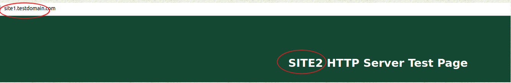

HAProxy Load Balancing Apache using LXD Containers
Introduction
HAProxy stands for "High Availability Proxy." This proxy can sit in front of any TCP application (such as web servers), but it is often used to act as a load-balancer between multiple instances of a website.
There might be a number of reasons for doing this. If you have a website that is being hit hard — adding another instance of that same website and placing HAProxy in front of both — allows you to distribute traffic between instances. Another reason might be to be able to update content on a website without any down time. HAProxy can also help mitigate DOS and DDOS attacks.
This guide is going to explore using HAProxy using two website instances, and load-balancing with round robin rotation, on the same LXD host. This might be a perfectly fine solution for ensuring that updates can be performed without downtime.
If your problem is website performance, however, you may need to distribute your multiple sites across actual bare metal or between multiple LXD hosts. It is certainly possible to do all of this on bare metal without using LXD at all, however LXD offers great flexibility and performance, plus it is great to use for lab testing.
Prerequisites and Assumptions
- Complete comfort at the command line on a Linux machine
- Experience with a command line editor (we are using
vimhere) - Experience with
crontab - Knowledge of LXD. For more information, you may want to consult the LXD Server document. It is perfectly fine to install LXD on a laptop or workstation as well without doing the full-blown server install. This document is being written with a lab machine that is running LXD, but is not set up as a full server as the document linked above uses.
- Some knowledge on installing, configuring, and using web servers.
- We will assume that LXD is already installed and ready to create containers.
Installing Containers
On your LXD host for this guide, we will need three containers. Obviously, there could be more web server containers if you wish. We will use web1 and web2 for our website containers and proxyha for our HAProxy container. To install these on your LXD host do:
lxc launch images:rockylinux/8 web1
lxc launch images:rockylinux/8 web2
lxc launch images:rockylinux/8 proxyha
Running an lxc list should return something like this:
+---------+---------+----------------------+------+-----------+-----------+
| NAME | STATE | IPV4 | IPV6 | TYPE | SNAPSHOTS |
+---------+---------+----------------------+------+-----------+-----------+
| proxyha | RUNNING | 10.181.87.137 (eth0) | | CONTAINER | 0 |
+---------+---------+----------------------+------+-----------+-----------+
| web1 | RUNNING | 10.181.87.207 (eth0) | | CONTAINER | 0 |
+---------+---------+----------------------+------+-----------+-----------+
| web2 | RUNNING | 10.181.87.34 (eth0) | | CONTAINER | 0 |
+---------+---------+----------------------+------+-----------+-----------+
Creating and Using the macvlan Profile
The containers are currently running on the default bridge interface with bridge assigned DHCP addresses. We are going to want to use DHCP addresses from our local LAN, so the first thing we need to do is to create and assign the macvlan profile.
Start by creating the profile:
lxc profile create macvlan
Make sure that your editor is set to your preferred editor, in this case vim:
export EDITOR=/usr/bin/vim
Next we need to modify the macvlan profile. But before we do, we need to know what interface the host is using for our LAN so run ip addr and look for the interface with the LAN IP assignment:
2: eno1: <BROADCAST,MULTICAST,UP,LOWER_UP> mtu 1500 qdisc fq_codel state UP group default qlen 1000
link/ether a8:5e:45:52:f8:b6 brd ff:ff:ff:ff:ff:ff
inet 192.168.1.141/24 brd 192.168.1.255 scope global dynamic noprefixroute eno1
!!! Note
In this case, the interface we are looking for is "eno1" but this could be completely different on your system. Use **your** interface information!
Now that we know the LAN interface, we can modify our macvlan profile. To do this, at the command line type:
lxc profile edit macvlan
We need to make our profile look something like this. We've excluded the comments at the top of the file, but if you are new to LXD, take a look at those:
config: {}
description: ""
devices:
eth0:
name: eth0
nictype: macvlan
parent: eno1
type: nic
name: macvlan
What happened when we created the macvlan profile is that the default profile was copied. The default profile cannot be changed.
Now that we have the macvlan profile, we need to apply it to our three containers:
lxc profile assign web1 default,macvlan
lxc profile assign web2 default,macvlan
lxc profile assign proxyha default,macvlan
Unfortunately, the default behavior of macvlan as implemented in the kernel, is inexplicably broken within an LXD container (see this document). This has been the case with the upstream provider since version 8 was released. To get around these issues, we will need to run dhclient on boot in each of the containers.
Doing this is pretty simple when using DHCP. Just follow this for each container:
lxc exec web1 bashwhich will put you at the command line of the web1 containercrontab -ewhich will edit root'scrontabon the container- type
ito get into insert mode. - add a line:
@reboot /usr/sbin/dhclient - hit the
ESCkey to exit out of insert mode. - save your changes with
SHIFT: wq - type
exitto exit container
Repeat steps for web2 and proxyha.
Once these steps are completed, restart the containers:
lxc restart web1
lxc restart web2
lxc restart proxyha
and when you do an lxc list again, you should see that the DHCP addresses are now assigned from your LAN:
+---------+---------+----------------------+------+-----------+-----------+
| NAME | STATE | IPV4 | IPV6 | TYPE | SNAPSHOTS |
+---------+---------+----------------------+------+-----------+-----------+
| proxyha | RUNNING | 192.168.1.149 (eth0) | | CONTAINER | 0 |
+---------+---------+----------------------+------+-----------+-----------+
| web1 | RUNNING | 192.168.1.150 (eth0) | | CONTAINER | 0 |
+---------+---------+----------------------+------+-----------+-----------+
| web2 | RUNNING | 192.168.1.101 (eth0) | | CONTAINER | 0 |
+---------+---------+----------------------+------+-----------+-----------+
Installing Apache and Modifying the Welcome Screen
Now that our environment is set, we need to install Apache (httpd) on each web container. This can done without physically accessing them:
lxc exec web1 dnf install httpd
lxc exec web2 dnf install httpd
While it is understood that you will need a whole lot more than Apache for any modern web server, this is enough to run some tests.
Next, we need to enable httpd, start it, and then modify the default welcome screen, so we know which server we are hitting when we attempt to access via proxy.
Enable and start httpd:
lxc exec web1 systemctl enable httpd
lxc exec web1 systemctl start httpd
lxc exec web2 systemctl enable httpd
lxc exec web2 systemctl start httpd
Now that we have httpd enabled and started, let's modify the welcome screen. This is the screen that comes up when there is no website configured, essentially a default page that loads. In Rocky Linux, this page is located here /usr/share/httpd/noindex/index.html. To modify that file, again, there's no need for direct access to the container. Simply do the following:
lxc exec web1 vi /usr/share/httpd/noindex/index.html
and then do a search for the <h1> tag, which should show this:
<h1>HTTP Server <strong>Test Page</strong></h1>
Simply change that line to read:
<h1>SITE1 HTTP Server <strong>Test Page</strong></h1>
Now repeat the process for web2. Going to these machines by IP in a browser should now return the correct welcome page for each. There's more to do on the web servers, but let's leave them and go on to the proxy server next.
Installing HAProxy on proxyha and LXD Proxy Configuration
It is just as easy to install HAProxy on the proxy container as well. Again, no need to access that container directly:
lxc exec proxyha dnf install haproxy
The next thing we want to do is configure haproxy to listen on port 80 and port 443 for the web services. This is done with the configure sub-command of lxc:
lxc config device add proxyha http proxy listen=tcp:0.0.0.0:80 connect=tcp:127.0.0.1:80
lxc config device add proxyha https proxy listen=tcp:0.0.0.0:443 connect=tcp:127.0.0.1:443
For our testing, we are only going to use port 80, or HTTP traffic, but this shows you how you would configure the container to listen on the default web ports for both HTTP and HTTPS. Using this command also ensures that restarting the proxyha container will maintain those listening ports.
The HAProxy Configuration
We've already installed HAProxy on the container, but we have done nothing with the configuration. Before we do anything, we need to do something to resolve our hosts. Normally we would be using fully-qualified domain names, but in this lab environment, we are just using IPs. To get some names associated with the machines, we are going to add some host file records to the proxyha container.
lxc exec proxyha vi /etc/hosts
Add the following records to the bottom of the file:
192.168.1.150 site1.testdomain.com site1
192.168.1.101 site2.testdomain.com site2
Which should allow the proxyha container to resolve those names.
Once that is complete, let's edit the haproxy.cfg file. There is so much in the original file that we are not going to be using, that we are simply going to make a backup of it first by moving it to a different name:
lxc exec proxyha mv /etc/haproxy/haproxy.cfg /etc/haproxy/haproxy.cfg.orig
Now let's create a new configuration file:
lxc exec proxyha vi /etc/haproxy/haproxy.cfg
Note that we have commented out all of the HTTPS protocol lines for now. In a production environment, you'd want to use a wildcard certificate that would cover your web servers and enable HTTPS:
global
log /dev/log local0
log /dev/log local1 notice
chroot /var/lib/haproxy
stats socket /run/haproxy/admin.sock mode 660 level admin expose-fd listeners
stats timeout 30s
user haproxy
group haproxy
daemon
# For now, all https is remarked out
#
#ssl-default-bind-options no-sslv3 no-tlsv10 no-tlsv11 no-tls-tickets
#ssl-default-bind-ciphers EECDH+AESGCM:EDH+AESGCM
#tune.ssl.default-dh-param 2048
defaults
log global
mode http
option httplog
option dontlognull
option forwardfor
option http-server-close
timeout connect 5000
timeout client 50000
timeout server 50000
errorfile 400 /etc/haproxy/errors/400.http
errorfile 403 /etc/haproxy/errors/403.http
errorfile 408 /etc/haproxy/errors/408.http
errorfile 500 /etc/haproxy/errors/500.http
errorfile 502 /etc/haproxy/errors/502.http
errorfile 503 /etc/haproxy/errors/503.http
errorfile 504 /etc/haproxy/errors/504.http
# For now, all https is remarked out
# frontend www-https
# bind *:443 ssl crt /etc/letsencrypt/live/example.com/example.com.pem
# reqadd X-Forwarded-Proto:\ https
# acl host_web1 hdr(host) -i site1.testdomain.com
# acl host_web2 hdr(host) -i site2.testdomain.com
# use_backend subdomain1 if host_web1
# use_backend subdomain2 if host_web2
frontend http_frontend
bind *:80
acl web_host1 hdr(host) -i site1.testdomain.com
acl web_host2 hdr(host) -i site2.testdomain.com
use_backend subdomain1 if web_host1
use_backend subdomain2 if web_host2
backend subdomain1
# balance leastconn
balance roundrobin
http-request set-header X-Client-IP %[src]
# redirect scheme https if !{ ssl_fc }
server site1 site1.testdomain.com:80 check
server site2 web2.testdomain.com:80 check
backend subdomain2
# balance leastconn
balance roundrobin
http-request set-header X-Client-IP %[src]
# redirect scheme https if !{ ssl_fc }
server site2 site2.testdomain.com:80 check
server site1 site1.testdomain.com:80 check
A little explanation of what's going on above. You should see this in your testing, when you get to the testing section of this guide (below):
Both site1 and site2 are defined in the "acl" section. Then both site1 and site2 are included in each other's "roundrobin" for their respective back ends. What happens when you go to site1.testdomain.com in the test, the URL does not change, but the page inside will switch each time you access the page from the site1 to the site2 test pages. Same goes for site2.testdomain.com.
This is done to show you the switch is occurring, but in reality, your website content will look exactly the same regardless of which server you are hitting. Keep in mind that we are showing how you might want to distribute traffic between multiple hosts. You can also use "leastcon" in the balance line, and instead of switching based on the previous hit, it will load the site with the least number of connections.
The Error Files
Some versions of HAProxy come with a standard set of web error files, however the version that comes from Rocky Linux (and the upstream vendor), does not have these files. You probably do want to create them, as they may help you troubleshoot any problems. These files go in the directory /etc/haproxy/errors which does not exist.
The first thing we need to do is create that directory:
lxc exec proxyha mkdir /etc/haproxy/errors
Then we need to create each of these files in that directory. Note that you can do this with each filename from your LXD host with the command lxc exec proxyha vi /etc/haproxy/errors/filename.http, where "filename.http" references one of the below file names. In a production environment, your company may have more specific errors that they would like to use:
File name 400.http:
HTTP/1.0 400 Bad request
Cache-Control: no-cache
Connection: close
Content-Type: text/html
<html><body><h1>400 Bad request</h1>
Your browser sent an invalid request.
</body></html>
File name 403.http:
HTTP/1.0 403 Forbidden
Cache-Control: no-cache
Connection: close
Content-Type: text/html
<html><body><h1>403 Forbidden</h1>
Request forbidden by administrative rules.
</body></html>
Filename 408.http:
HTTP/1.0 408 Request Time-out
Cache-Control: no-cache
Connection: close
Content-Type: text/html
<html><body><h1>408 Request Time-out</h1>
Your browser didn't send a complete request in time.
</body></html>
Filename 500.http:
HTTP/1.0 500 Internal Server Error
Cache-Control: no-cache
Connection: close
Content-Type: text/html
<html><body><h1>500 Internal Server Error</h1>
An internal server error occurred.
</body></html>
Filename 502.http:
HTTP/1.0 502 Bad Gateway
Cache-Control: no-cache
Connection: close
Content-Type: text/html
<html><body><h1>502 Bad Gateway</h1>
The server returned an invalid or incomplete response.
</body></html>
Filename 503.http:
HTTP/1.0 503 Service Unavailable
Cache-Control: no-cache
Connection: close
Content-Type: text/html
<html><body><h1>503 Service Unavailable</h1>
No server is available to handle this request.
</body></html>
Filename 504.http:
HTTP/1.0 504 Gateway Time-out
Cache-Control: no-cache
Connection: close
Content-Type: text/html
<html><body><h1>504 Gateway Time-out</h1>
The server didn't respond in time.
</body></html>
Running The Proxy
We need to create a "run" directory for haproxy before we start the service:
lxc exec proxyha mkdir /run/haproxy
Next, we need to enable the service and start it:
lxc exec proxyha systemctl enable haproxy
lxc exec proxyha systemctl start haproxy
If you get any errors, research the reason by using:
lxc exec proxyha systemctl status haproxy
If everything starts and runs without issue, we are ready to move on to testing.
Testing The Proxy
As with the hosts (/etc/hosts) setup that we used so that our proxyha container can resolve the web servers, and since in our lab environment we don't have a local DNS server running, we need to set the IP values on our local machine for both the site1 and site2 websites, to correspond to our haproxy container.
To do this, we need to modify our /etc/hosts file on our local machine. Consider this method of domain resolution a "poor man's DNS."
sudo vi /etc/hosts
Then just add these two lines:
192.168.1.149 site1.testdomain.com site1
192.168.1.149 site2.testdomain.com site2
If you ping either site1 or site2 on your local machine now, you should get a response from proxyha:
PING site1.testdomain.com (192.168.1.149) 56(84) bytes of data.
64 bytes from site1.testdomain.com (192.168.1.149): icmp_seq=1 ttl=64 time=0.427 ms
64 bytes from site1.testdomain.com (192.168.1.149): icmp_seq=2 ttl=64 time=0.430 ms
Now open your web browser and type site1.testdomain.com (or site2.testdomain.com) as the URL in the address bar. You should get a response back from one of the two test pages and if you load the page again, you should get the next server's test page. Note that the URL does not change, but the returned page will change alternately between servers.

Logging
Even though our configuration file is set up correctly for logging, we need two things: First, we need a directory in /var/lib/haproxy/ called "dev":
lxc exec proxyha mkdir /var/lib/haproxy/dev
Next, we need to create a system process for rsyslogd to grab instances from the socket (/var/lib/haproxy/dev/log in this case) and store those in /var/log/haproxy.log:
lxc exec proxyha vi /etc/rsyslog.d/99-haproxy.conf
Add the following contents to that file:
$AddUnixListenSocket /var/lib/haproxy/dev/log
# Send HAProxy messages to a dedicated logfile
:programname, startswith, "haproxy" {
/var/log/haproxy.log
stop
}
Save the file and exit, then restart rsyslog:
lxc exec proxyha systemctl restart rsyslog
And to populate that log file with something right away, restart haproxy again:
lxc exec proxyha systemctl restart haproxy
To take a look at the log file created:
lxc exec proxyha more /var/log/haproxy.log
Which should show you something like this:
Sep 25 23:18:02 proxyha haproxy[4602]: Proxy http_frontend started.
Sep 25 23:18:02 proxyha haproxy[4602]: Proxy http_frontend started.
Sep 25 23:18:02 proxyha haproxy[4602]: Proxy subdomain1 started.
Sep 25 23:18:02 proxyha haproxy[4602]: Proxy subdomain1 started.
Sep 25 23:18:02 proxyha haproxy[4602]: Proxy subdomain2 started.
Sep 25 23:18:02 proxyha haproxy[4602]: Proxy subdomain2 started.
Conclusions
HAProxy is a powerful proxy engine that can be used for many things. It is a high-performance, open-source load balancer and reverse proxy for TCP and HTTP applications. We have shown in this document how to use load balancing of two web server instances.
It can also be used for other applications, including databases. It works within LXD containers, as well as on bare metal and standalone servers.
There are plenty of uses not covered in this document. Check out the official manual for HAProxy here.